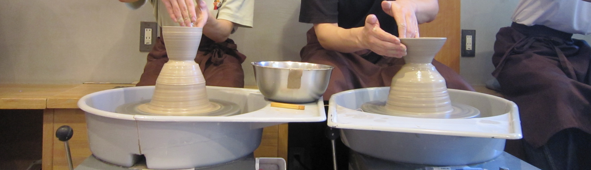

Porpose&References 目的&参考文献
目的
本ホームページは、茶道に興味はあるものの実際の経験がなく、敷居の高さを感じている若年層を主な対象として、茶道の基本的な知識や魅力を分かりやすく伝えることを目的とする。
近年、伝統文化への参加率が低下する一方で、スマートフォンを中心としたデジタル環境は急速に普及している。そのような状況において、オンライン上で手軽に閲覧できる茶道教材を整備することは、文化継承の観点からも重要である。
本ホームページでは、裏千家における点前の流れや使用される道具の紹介、学習コンテンツなどを体系的にまとめ、初めて茶道に触れる人でも雰囲気や魅力を理解しやすい構成とした。また、スマートフォンおよびPCの両端末に対応させることで、閲覧性の向上と利用しやすい学習環境の提供を目指した。
これにより、茶道に対する心理的障壁を低減し、若年層の茶道への関心喚起および参加意欲の向上につなげることを期待する。
参考文献
- ・裏千家公式ホームページ
- ・裏千家茶道 監修:裏千家 今日庵